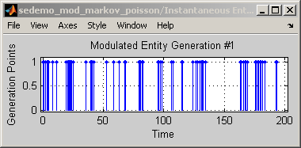
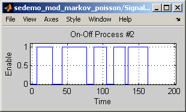

Markov-Modulated Poisson Process
Contents
Description
This model generates entities using a Markov-modulated Poisson process, which is a Poisson process whose rate depends on the state of a Markov chain. In particular, the process is an interrupted Poisson process because the “off” state prevents entity generation. The model includes three independent on-off modulated Markov sources so you can see how their behavior depends on the rate of the Poisson process when the Markov chain is in the “on” state. The Path Combiner block aggregates the outputs of all the On-Off Modulated Markov Source subsystems.
Each of the On-Off Modulated Markov Source subsystems behaves as follows:
- The Time-Based Entity Generator block models the Markov chain by generating an entity each time the chain changes state.
- The Entity Departure Event to Function-Call Event conveys the state change to the Create Generator Selection Variable subsystem, whose output changes from 0 to 1 or vice versa.
- The block labeled Generator 1 models the Poisson process by generating entities that attempt to depart from this On-Off Modulated Markov Source subsystem. (By contrast, the entities that represent the state changes of the Markov chain do not depart from this subsystem.)
- The Enabled Gate block regulates departures from the subsystem. If the state of the Markov chain is “off,” the gate is closed and entities cannot depart.
Results and Displays
Average Time between On-Off Points = 5 and Average Intergeneration Time = 1
Average Time between On-Off Points = 15 and Average Intergeneration Time = 4
Average Time between On-Off Points = 50 and Average Intergeneration Time = 10